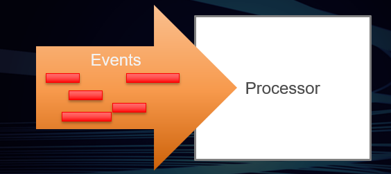

/ VST Home / Technical Documentation
About MIDI in VST 3
On this page:
- Related Concepts in MIDI and VST 3
- MIDI 2.0 Per-Note Controllers
- MIDI 2.0 Increased Resolution, compared to MIDI 1.0
Related pages:
- [3.0.1] Parameter MIDI Mapping (MIDI 1.0 support)
- [3.5.0] Note Expression
- [3.5.0] Key Switch
- [3.6.11] NoteExpression Physical UI Mapping
- [3.6.12] Legacy MIDI CC Out Event
- [3.6.12] MPE support for Wrappers
- [3.8.0] MIDI Learn 2 (MIDI 2.0 support)
- [3.8.0] Parameter MIDI Mapping 2 (MIDI 2.0 support)
Unlike in VST 2, MIDI is not included in VST 3.
But VST 3 offers suitable concepts that can be translated to and from MIDI using Event:

Related Concepts in MIDI and VST 3
Relationship of concepts in MIDI 1.0 to VST 3
| MIDI 1.0 | VST 3 | Defined in |
|---|---|---|
| Port | Bus of Vst::MediaType, Vst::MediaTypes::kEvent | ivstcomponent.h |
| Channel | Channel of a Bus, Unit by Bus and Channel | ivstcomponent.h, ivstunits.h |
| Note-On | Vst::NoteOnEvent | ivstevents.h |
| Note-Off | Vst::NoteOffEvent | ivstevents.h |
| Poly Key Pressure | Vst::PolyPressureEvent | ivstevents.h |
| Control Change | Parameter, Vst:: IMidiMapping, Vst:: IMidiMapping2 | ivstcomponent.h, ivstmidicontrollers.h |
| Channel Pressure | Parameter, Vst:: IMidiMapping, Vst:: IMidiMapping2 | ivstcomponent.h, ivstmidicontrollers.h |
| Pitch Bend | Parameter, Vst:: IMidiMapping, Vst:: IMidiMapping2 | ivstcomponent.h, ivstmidicontrollers.h |
| Program Change | Parameter, kIsProgramChange, Vst::ProgramListInfo | ivstcomponent.h, ivstunits.h |
| MPE (MIDI Polyphonic Expression) | NoteExpression, PhysicalUI | ivstnoteexpression.h, ivstphysicalui.h |
| System Exclusive | Vst::DataEvent of Type Vst::DataEvent::kMidiSysEx | ivstevents.h |
Additional relationships of concepts introduced in MIDI 2.0 (https://www.midi.org/) to VST 3
| MIDI 2.0 | VST 3 | Defined in/Comments |
|---|---|---|
| Group (of Channels) | Bus of Vst::MediaType, Vst::MediaTypes::kEvent | ivstcomponent.h |
| Registered Per-Note Controller | NoteExpression, PhysicalUI | ivstnoteexpression.h, ivstphysicalui.h |
| Assignable Per-Note Controller | NoteExpression | ivstnoteexpression.h |
| System Exclusive 8-Bit | indirect support | The host can translate to 7-Bit, Vst::DataEvent of Type Vst::DataEvent::kMidiSysEx |
| Registered Controller | Parameter, Vst:: IMidiMapping2 | The host can do detailed tuning via NoteExpression |
| Assignable Controller | Parameter, Vst:: IMidiMapping2 | The host should offer mapping to parameters |
| Relative Registered Controller | not supported | The host is free to translate this to parameters |
| Relative Assignable Controller | not supported | The host is free to translate this to parameters |
| Per-Note Pitch Bend | not supported | The host can do detailed tuning via NoteExpression |
| UMP Stream Message | not supported | not supported |
| Mixed Data Set | not supported | not supported |
MIDI 2.0 Per-Note Controllers
There are many subtle differences between MIDI 2.0 Per-Note Controllers and VST 3 NoteExpression. The good thing is that plug-in developers do not have to do anything about it. It is the host's duty to translate from MIDI 2.0 to VST 3.
MIDI 2.0 Increased Resolution, compared to MIDI 1.0
MIDI 2.0 achieved a significant increase in resolution of many important values, like Velocity, Pressure, and Controllers compared to MIDI 1.0. Nevertheless, VST 3 still has superior resolution than MIDI 2.0. Plug-ins and hosts supporting VST 3 should make use of these capabilities and should not stick to a 0-127 mindset.
See the following tables to compare the resolution of specific values in MIDI 1.0, MIDI 2.0, and VST 3.
| Value | MIDI 1.0 | MIDI 2.0 | VST 3 |
|---|---|---|---|
| Velocity (On & Off) | 7 Bit integer | 16 Bit integer | 32 Bit float |
| Poly Pressure | 7 Bit integer | 32 Bit integer | 32 Bit float |
| Channel Pressure / Parameters | 7 Bit integer | 32 Bit integer | 64 Bit float |
| Controllers / Parameters | 7-14 Bit integer | 32 Bit integer | 64 Bit float |
| Pitch Bend / Parameters | 14 Bit integer | 32 Bit integer | 64 Bit float |
| Note Attribute Tuning | not available | 16 Bit fixed point (7.9) | 32 Bit float |
| Per-Note Controllers / NoteExpression | not available | 32 Bit integer | 64 Bit float |